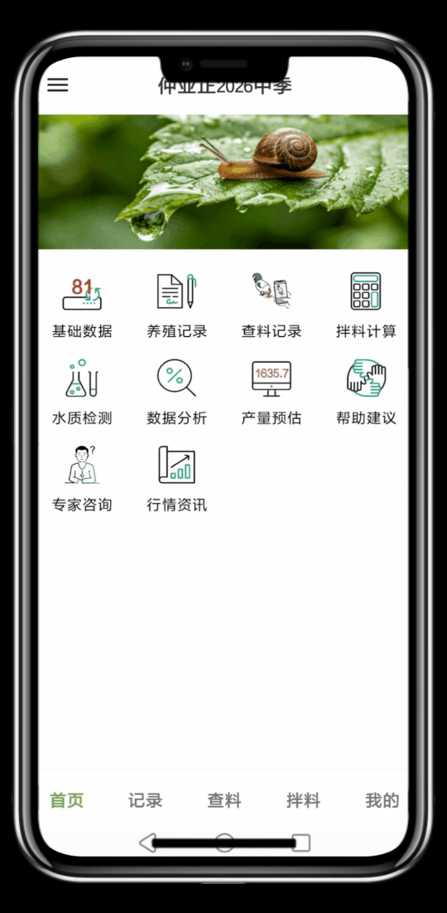

功能介绍 · 十一个模块
一本放在兜里的养殖台账
养虾不是一件能靠脑子记完的事——几十个棚、四餐投喂、每日水质、临时拌料，错一项就得多跑一趟。这个应用把养殖生产里反复出现的琐事，各自收进一个专门的模块里，每一项都能离线使用，数据留在手机里。
批次与基础数据
一次养虾就是一批。应用支持创建多个批次，批次之间数据完全隔离，互不干扰。放苗日期、苗种品牌与数量、饲料品牌、池塘参数、动保预设，在基础数据里一次性配置好，后面的记录都从这里取。
投喂记录
每天的早、中、晚、夜宵四餐投喂量逐条记录，动保使用情况同步登记。列表支持分页加载与滚动同步，棚多的时候也不用一页页翻到底。
巡塘查料
输入棚数与喂料时间，自动生成查料表，逐棚计算吃料用时。吃料超时的棚自动标红，正常、异常、已排除以颜色区分，大规模养殖时一眼能扫出问题棚。
拌料计算
告别纸笔和计算器。发酵料、粉料、0.3 料、0.5 料、1.0 料多规格自动计算，加水比例在 10%–40% 之间自由调节。棚数超出预设时自动以红边框、黄背景醒目提醒，并支持多棚批量计算、列固定与隐藏。
水质检测
弧菌、盐度、氨氮、亚硝酸盐、pH、溶解氧、水温、余氯、硫化氢、ORP 等十一项指标逐日记录，支持调取上次记录对照，自动汇总统计。
数据分析
投喂量、吃料用时、水质三个维度的趋势图放在一起看。柱状图与折线图可切换，时间范围支持 7 天、15 天、30 天与自定义。
行情资讯
水产市场价格实时查询，按品种分类展示，价格走势一页看全，出虾前先看价。
计划任务
改底、消毒这类周期性作业，自定义一次，应用在后台自动生成到期任务，日间与晚间分别提醒，靠安排而不是靠记性。
数据备份
本地 SQLite 之外，可选坚果云 WebDAV 云备份，应用后台自动执行，最多保留 20 份历史。手机丢了，台账还在。
账号体系
通过 Supabase 邮箱注册与登录，可设置昵称，记录人信息会关联到每一条投喂记录上——几个师傅共用一部手机时，能分清是谁记的。

完全离线，是本应用的基本立场。池塘边没有信号的时候，记录也不能停。